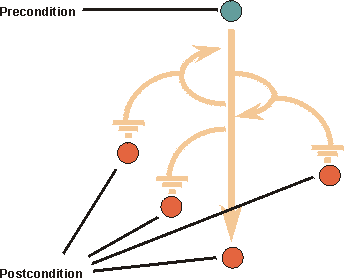

| Рекомендация: Вариант |
 |
|
| Связанные элементы |
|---|
ОбъяснениеЭто определение содержит несколько ключевых слов:
Функции, выполняемые системой, определяются различными вариантами использования, представляющими конкретные потоки событий. То, что происходит в системе при выполнении варианта использования, определяется описанием этого варианта использования.
В банкомате клиент может, например, снять деньги со счета, положить деньги на счет или проверить остаток на счете. Эти функции соответствуют потокам, которые можно представить с помощью вариантов использования. Для каждого варианта использования существует своя собственная задача, которую требуется выполнить. Собранные варианты использования составляют все возможные способы использования системы. Для того чтобы определить цель варианта использования, иногда просто достаточно понять, как он называется. Поиск вариантов использованияПри идентификации вариантов использования может быть полезен приведенный ниже список вопросов:
Некоторые варианты использования часто могут остаться незамеченными, поскольку они не представляют основные функции системы; например, к ним относятся:
Если вы разработали бизнес-модель вариантов использования и аналитическую модель бизнес-процесса, то эти артефакты можно использовать в качестве отправной точки для идентификации вариантов использования. Схема развития варианта использованиеВ ранних итерациях на этапе уточнения детально описываются только несколько вариантов использования. Это варианты, которые являются значимыми с точки зрения архитектуры. Перед тем как приступить к детальному описанию варианта использования, сначала всегда следует разработать его схему (в пошаговом формате). Эта пошаговая схема должна быть первой попыткой при определении структуры потока событий варианта использования (см. ниже раздел Поток событий - Структура). Всегда начинайте с основного потока варианта использования. После согласования схемы основного потока можно добавлять потоки, дополнительные по отношению к основному потоку событий. В конце этапа уточнения все варианты использования, которые планировалось подробно описать, должны быть завершены. Все ли варианты использования подробно описаны?Модель часто содержит варианты использования, которые настолько просты, что для них не требуется подробное описание потока событий, а вполне достаточно пошаговой схемы. Критерий принятия этого решения - во-первых, нет расхождений в мнениях разных групп пользователей о том, что означает данный вариант использования, и, во-вторых, проектировщики и специалисты по тестированию считают достаточной степень детализации, обеспечиваемую пошаговым форматом. Примером могут служить варианты использования, которые описывают простой ввод или получение некоторых данных от системы. Область варианта использованияЧасто бывает трудно определить, из одного или нескольких вариантов использования состоит набор взаимодействий (диалог) пользователя с системой. Рассмотрим пример автомата для сбора пустой тары. Клиент помещает в автомат использованную тару, такую как банки, бутылки и упаковку. Затем он нажимает кнопку, и печатается квитанция. Затем по этой квитанции клиент получает деньги. Соответствует ли закладывание предмета в автомат одному варианту использования, а получение квитанции - другому? Или это один и тот же вариант использования? Это два действия, но одно без другого не имеет для клиента никакой ценности. Скорее, ценность (и смысл) для клиента имеет именно полный диалог, который включает помещение в автомат всех предметов и получение квитанции. Следовательно, полный вариант использования - это законченный диалог, от помещения первого предмета до нажатия кнопки и получения квитанции. Кроме того, необходимо, чтобы два эти действия хранились вместе, чтобы вместе их можно было проверять, изменять, тестировать, создавать для них описание и вообще управлять ими как одним целым. Это становится еще более очевидным в больших системах. Реализация вариантов использованияВариант использования описывает, что именно происходит в системе, когда к ней обращается субъект для выполнения этого варианта. Вариант использования не определяет, как его задачи выполняются внутри системы в терминах взаимодействующих объектов. Это делают реализации варианта использования. Пример: В примере с телефоном вариант использования должен указывать, помимо других вещей, что система издает сигнал, когда вызывающий абонент снимает трубку, и что затем система принимает цифры, находит вызываемого абонента, дает телефонный звонок, соединяет вызов, передает речь и т.д. В выполняющей системе экземпляр варианта выполнения соответствует не определенному объекту в модели реализации (например, экземпляру класса в коде), а конкретному потоку событий, который вызывается субъектом и выполняется как последовательность событий среди множества объектов. Другими словами, экземпляры вариантов использования соответствуют соединению экземпляров реализуемых объектов. Это называется реализацией варианта использования. Очень часто в реализации нескольких вариантов использования участвуют одни и те же объекты. Например, в реализации вариантов использования Положить на счет и Снять со счета в банковской системе может использоваться один и тот же объект Счет. Это не значит, что между этими вариантами использования есть связь, а означает только, что в их реализации используется один и тот же объект. Поток событий можно представить как состоящий из нескольких подпотоков; взятые все вместе, они образуют полный поток событий. Описание подпотока можно использовать в потоке событий других вариантов использования. Подпотоки в описании потока событий одного варианта использования могут входить в состав потоков событий других вариантов использования. В проекте одинаковые объекты должны выполнять общую функцию для всех подходящих вариантов использования; то есть, эту функцию должен выполнять только один набор объектов, независимо от того, какой вариант использования выполняется. Пример: В примере с банкоматом потоки событий вариантов использования Снять деньги со счета Проверить остаток на счете содержат одинаковый начальный подпоток. Поток событий в обоих вариантах начинается с проверки идентификационного номера карточки и персонального кода доступа (PIN-кода) клиента. Существует множество возможных экземпляров варианта использованияДля экземпляра варианта использования существует почти неограниченное, но перечислимое число путей. Эти пути представляют варианты выбора, открытые для экземпляра варианта использования в описании его потока событий. Выбранный путь зависит от событий. Существуют следующие типы событий:
Пример: В случае с вариантом использования Сдать тару в примере с автоматом по сбору пустой тары у клиента всегда есть две возможности: поместить в автомат еще один предмет или получить квитанцию на сданные предметы.
Пример: В варианте использования Снять деньги со счета в системе банкомата поток событий будет определять, не запрашивает ли Клиент большую сумму, чем есть на счете. В зависимости от результата проверки экземпляр варианта использования пойдет по разным путям. Параллелизм экземпляров варианта использованияЕсли система разрешает, то экземпляры нескольких вариантов использования и несколько экземпляров одного и того же варианта использования работают параллельно. При моделировании вариантов использования можно предполагать, что одновременно могут быть активны несколько экземпляров вариантов использования, причем конфликты при этом не возникают. Предполагается, что эта проблема решается в модели проектируемой системы, так как моделирование вариантов использования не описывает, что как работает. Один из способов увидеть это - предположить, что одновременно активен только один экземпляр варианта использования, и что выполнение этого экземпляра представляет собой элементарное (атомарное) действие. При моделировании вариантов использования "интерпретирующая машина" считается бесконечно быстрой, так что сериализация экземпляров варианта использования не представляет никакой проблемы. ИмяУ каждого варианта использования должно быть имя, которое указывает, какой результат достигается при его взаимодействии с субъектом (субъектами). Для удобства имя может состоять из нескольких слов. Имя варианта использования должно быть уникальным. Пример: Ниже приведены варианты имен для варианта использования Сдать тару в примере с автоматом для сбора пустой тары:
Краткое описаниеКраткое описание варианта использования должно отражать его предназначение. При создании описания обращайтесь к субъектам, которые включаются в вариант использования, к глоссарию и при необходимости определяйте новые понятия. Пример:Ниже приведены примеры кратких описаний вариантов использования Сдать тару и Добавить новый тип бутылки в системе Автомат по сбору пустой тары: Сдать тару: Пользователь использует этот автомат для автоматического подсчета всей сданной тары (бутылок, банок и пакетов) и получения квитанции. Квитанция оплачивается в кассе. Добавить новый тип бутылки: В систему можно добавить новые виды бутылок, начав их описание со слов 'режим обучения' и указав 5 образцов (в точности таких же, как при возврате). Таким образом, автомат может измерять бутылки и учиться идентифицировать их. Сумма, возвращаемая за бутылку нового типа, задается менеджером. Поток событий - СодержимоеПоток событий варианта использования содержит наиболее важную информацию, создаваемую во время моделирования вариантов использования. Описание потока событий должно быть достаточно ясным, чтобы его мог понять неспециалист. Помните, что поток событий должен представлять действия, выполняемые системой, а не то, как спроектирована система для выполнения требуемой функции. Ниже приведены рекомендации по содержимому потока событий:
Если определенные термины применялись в других вариантах использования, убедитесь, что в данном варианте применяются в точности те же самые термины, и что их подразумеваемое значение то же самое. Для работы с общими терминами поместите их в глоссарий.
Поток событий - Структура
|


|
1.1. Запуск варианта использования
Этот вариант использования запускается, когда субъект Оператор сообщает системе, что следует создать запрос на измерение. Затем система получит все субъекты Элемент сети, их объекты измерений и соответствующие функции измерений, которые доступны для данного конкретного Оператора. В число доступных Элементов сети входят действующие элементы, и те элементы, к которым у Оператора есть права доступа. Доступность функций измерения зависит от того, что было настроено для конкретного типа объекта измерений. 1.2. Настроить Запрос на измерение Система позволяет субъекту Оператор выбрать Элементы сети для измерения и затем показывает, какие объекты измерения доступны для выбранных элементов. Система позволяет Оператору выбрать нужные объекты измерения, а затем - функции измерения, которые должны быть настроены для каждого объекта. Система позволяет Оператору ввести текстовый комментарий для запроса на измерение. Оператор указывает системе, что она должна выполнить Запрос на измерение. В ответ система генерирует для Запроса на измерение уникальное имя и устанавливает значения по умолчанию для времени, частоты и продолжительности измерения. Значения по умолчанию уникальны для каждого Оператора. Затем система предоставляет Оператору возможность изменить эти значения по умолчанию. 1.3. Инициализировать Запрос Оператор указывает системе, что необходимо инициализировать Запрос на измерение. Система регистрирует идентификационные данные Оператора, создавшего запрос, дату создания и состояние "Запланировано" для этого запроса. 1.4. Вариант использования завершается Система выдает Оператору подтверждение инициализации запроса на измерение, и он становится доступным другим субъектам для просмотра. |
Описание варианта использования: при применении этого стиля текст легко читается, а поток операций легко прослеживается. В описаниях рекомендуется применять именно этот стиль.
Пример 2:
|
Запрашивающие могут создавать запросы на сбор данных измерений от элементов сети.
Система присвоит Запросу уникальное имя и значения по умолчанию, определяющие продолжительность и время измерения, а также его частоту. Затем запрашивающий может изменить эти значения. Затем запрашивающий должен указать применяемую функцию измерения, элемент сети и объекты измерений. Кроме того, Запрашивающий может добавить в запрос личный комментарий. Когда необходимая информация определена, создается новый Запрос, который инициализируется с определенными атрибутами, именем создавшего и датой создания. Для запроса устанавливается состояние "запланирован". (Возможны следующие состояния: Запланирован, Выполняется, Выполнен, Отменен и Ошибочный.) Пользовательский интерфейс получает уведомление о создании нового Запроса ссылку на него, чтобы он мог быть показан. |
Описание варианта использования: Это удобочитаемый стиль, однако поток событий не ясен.
Пример 3:
'Управление запросом' (Идентификатор пользователя)
REPEAT
<= 'Показать меню управления запросом'
IF ( => 'Создание заказа' (Функция измерения,
элемент сети, объект измерения)) THEN
Система находит уникальное имя, значения по умолчанию для
времени и продолжительности измерения.
<= 'Показать запроса' (Атрибуты по умолчанию)
REPEAT
=> 'Изменить запрос' (Изменяемый атрибут, Новое значение атрибута)
<= 'Обновить экран' (Новые атрибуты)
UNTIL (Все атрибуты определены)
REPEAT
IF ( => 'Изменить запрос' (Изменяемый атрибут, Новое значение атрибута)
THEN <= 'Обновить экран' (Новые атрибуты)
ELSIF ( => 'Сохранить запрос' (Идентификатор заказа, Атрибуты)) THEN
В системе создается и инициализируется запрос с определенными
атрибутами, именем создавшего, датой создания
и состоянием 'запланирован'.
<= 'Создан новый запрос' (Заказ)
ENDIF
UNTIL (=> 'Выход')
ENDIF
UNTIL 'Завершить управление запросом'
|
Описание варианта использования: в данном случае разработчик выбрал формальный стиль с применением псевдокода. Этот стиль затрудняет понимание этапов процесса, но он может быть полезен, если трудно точно зафиксировать поток событий.
Поток событий - Пример
Полное описание потока событий варианта использования Управление запросом, включая дополнительные потоки, может выглядеть следующим образом:
1. Основной поток событий
1.1. Запуск варианта использования
Этот вариант использования запускается, когда субъект Оператор сообщает системе, что следует создать запрос на измерение. Затем система получит все субъекты Элемент сети, их объекты измерений и соответствующие функции измерений, которые доступны для данного конкретного Оператора. В число доступных Элементов сети входят действующие элементы, и те элементы, к которым у Оператора есть права доступа. Доступность функций измерения зависит от того, что было настроено для конкретного типа объекта измерений.
1.2. Настроить Запрос на измерение
Система позволяет субъекту Оператор выбрать Элементы сети для измерения и затем показывает, какие объекты измерения доступны для выбранных элементов. Система позволяет Оператору выбрать нужные объекты измерения, а затем - функции измерения, которые должны быть настроены для каждого объекта.
Система позволяет Оператору ввести текстовый комментарий для запроса на измерение.
Оператор указывает системе, что она должна выполнить Запрос на измерение. В ответ система генерирует для Запроса на измерение уникальное имя и устанавливает значения по умолчанию для времени, частоты и продолжительности измерения. Значения по умолчанию уникальны для каждого Оператора. Затем система предоставляет Оператору возможность изменить эти значения по умолчанию.
1.3. Инициализировать Запрос
Оператор указывает системе, что необходимо инициализировать Запрос на измерение. Система регистрирует идентификационные данные Оператора, создавшего запрос, дату создания и состояние "Запланировано" для этого запроса.
1.4. Вариант использования завершается
Система выдает Оператору подтверждение инициализации запроса на измерение, и он становится доступным другим субъектам для просмотра.
2. Дополнительные потоки событий
2.1. Нет доступных элементов сети
Если в пункте 1.1. Запуск варианта использования обнаруживается, что для этого Оператора нет доступных Элементов сети для измерения, система проинформирует об этом Оператора. Затем вариант использования будет завершен.
2.2. Нет доступных функций измерения
Если в пункте 1.2. Настроить Запрос на измерение для выбранных Элементов сети будут отсутствовать функции измерения, то система проинформирует об этом Оператора и предложит ему выбрать другие Элементы сети.
2.3. Отменить Запрос на измерение
Система предоставляет Оператору возможность отмены всех действий в любой момент во время выполнения варианта использования. Затем система возвращается в состояние, в котором она находилась перед запуском варианта использования, и завершает вариант использования.
Специальные требования 
В специальных требованиях описываются все требования к варианту использования, которые не включаются в поток событий. Это нефункциональные требования, которые влияют на модель проектируемой системы. См. также обсуждение нефункциональных требований в Рекомендации по рабочему продукту: Модель вариантов использования. Эти требования можно распределить по таким категориям как удобство работы, надежность, производительность и заменяемость, но обычно их так немного, что такое распределение не имеет особой ценности.
Пример:
В системе Автомат для сбора пустой тары специальное требование к варианту использования Возврат предметов может быть следующим:
Автомат должен распознавать предметы с надежностью более 95 процентов.
Входные и выходные условия
Понятия входного условия и выходного условия позволяют объяснить, каким образом запускается и завершается поток событий. Однако, их следует применять только в том случае, если они имеют дополнительную ценность для субъектов, которые будут выполнять данный вариант использования.

Входное условие - это состояние системы и околосистемных объектов, которое требуется для запуска варианта использования. Выходное условие определяет состояния системы, в которых она может находиться после завершения варианта использования.
Обратите внимание на следующее:
- Входные и выходные условия должны описывать состояния, которые могут наблюдаться пользователями. Примерами таких состояний может быть "Пользователь, вошел в систему" или "Пользователь открыл документ".
- Входное условие - это ограничение на время запуска варианта использования, но не событие, запускающее этот вариант.
- Входное условие для варианта использования не относится только к одному подпотоку, хотя входные и выходные условия можно определять и на уровне подпотоков.
- Выходное условие для варианта использования должно быть истинным независимо от того, какие дополнительные потоки выполнялись; оно должно быть истинным не только для главного потока. Если что-то может быть не выполнено, то выходное условие следует сформулировать следующим образом: "Действие выполнено, или если что-то не выполнено, то действие не выполнено" (вместо того чтобы написать "Действие выполнено").
- Если выходные условия применяются вместе с отношениями расширения, то необходимо следить за тем, чтобы расширяющий вариант использования не добавлял в базовый вариант использования подпоток, нарушающий выходное условие.
- Выходные условия могут быть мощным инструментом описания вариантов использования. Сначала можно определить, какой результат должен быть достигнут в результате выполнения варианта использования, то есть выходное условие. Затем можно описать способы достижения этого условия, то есть поток событий.
Пример:
Входное условие для варианта использования Снять деньги со счета через банкомат: У клиента есть персональная карточка, которая подходит к устройству для считывания; Клиент ввел PIN-код; Клиент зарегистрирован в банковской системе.
Выходное условие для варианта использования снять деньги со счета через банкомат: В конце варианта использования подводится баланс по всем журналам счетов и проводок; соединение с банковской системой инициализируется повторно; клиенту возвращена его карточка.
Точки расширения
Точка расширения открывает возможность расширения варианта использования. Для точки расширения задается имя и список ссылок на одно или несколько расположений в потоке событий варианта использования. Точка расширения может указывать на одно расположение между двумя шагами выполнения внутри варианта использования. Она также может указывать на набор отдельных расположений.
Использование именованных точек расширения позволяет отделить спецификацию поведения расширяющего варианта использования от внутренних деталей базового варианта использования. Пока имена точек расширения остаются прежними, базовый вариант использования можно изменять или переупорядочивать; это не повлияет на расширяющий вариант использования. В то же время в него не загружается текст, описывающий поток событий базового варианта использования с указанием, где именно следует расширить поведение. См. также Рекомендацию по рабочему продукту: Отношение расширения.
Пример:
В телефонной системе вариант использования Телефонный звонок можно расширить абстрактным вариантом использования Показать идентификатор вызывающего абонента. Это дополнительная услуга, часто называемая "Определитель номера", которая может запрашиваться (а может и не запрашиваться) вызываемым абонентом. Описание точки расширения в варианте использования Телефонный звонок может выглядеть следующим образом:
Имя: Показать идентификатор
Расположение: После раздела 1.9 Звонит телефон вызываемого абонента
Диаграммы вариантов использования
Связи данного варианта использования с субъектами и другими вариантами использования можно проиллюстрировать с помощью диаграммы варианта использования (в редких случаях диаграмм может быть несколько). Это полезно, если вариант использования связан со множеством субъектов или с другими вариантами использования. Диаграмма такого рода носит "локальный" характер, поскольку она показывает модель вариантов использования с точки зрения только одного варианта использования и не предназначается для объяснения каких-либо общих фактов, касающихся всей модели вариантов использования. См. также Рекомендацию по рабочему продукту: Диаграмма варианта использования.
© Copyright IBM Corp. 1987, 2006. Все права защищены.. |